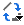

Karte mit Balken
Bar-Map

Datenanforderungen
Wählen Sie X mit mindestens 3 Y-Spalten aus, um eine Karte mit Balkendiagrammen zu erstellen. Die ersten zwei Spalten (X und Y) entscheiden die Position von jedem Balken. Weitere Y-Spalten werden verwendet, um die Balkendiagramme nach Zeilen zu zeichnen. Das bedeutet, dass alle Y-Werte aus der zweiten Y-Spalte in jeder Zeile als ein Balkendiagramm gezeichnet werden und dass diese Balkendiagramme sich in der ersten XY-Spalte befinden.
Diagramm erstellen
Wählen Sie die gewünschten Daten aus.
Wählen Sie im Menü .
Vorlage
BarMap.OTPU (installiert im Origin-Programmordner).
Notizen
Die Karte mit Balken ist eine Reihe von Balkendiagrammen, die XY-Daten verwenden, um die Balken zu positionieren. Jedes Balkendiagramm wird durch eine Zeile der Y-Spalten erstellt.
- Um die Balkengröße zu ändern, gehen Sie zur Registerkarte Karte im Dialog Details Zeichnung.
- Um eine Karte mit gestapelten Balken zu zeichnen, können Sie zur Registerkarte Karte im Dialog Details Zeichnung gehen und das Kontrollkästchen Stapeln aktivieren. Außerdem können Sie das Kontrollkästchen Auf Prozent normalisieren aktivieren, um die gestapelten Balken auf die festgelegte Maximale Höhe zu normalisieren.
- Um den Abstand zwischen den Balken in jedem Balkendiagramm zu steuern, können Sie zur Registerkarte Abstand im Dialog Details Zeichnung gehen.
- Um den Diagrammtyp zwischen Karte mit Balkendiagrammen und Karte mit Kreisdiagrammen zu wechseln.
- Klicken Sie auf ein Balken-/Kreisdiagramm und klicken Sie dann auf die Schaltfläche Diagramm ändern in  auf der Minisymbolleiste, um Kreisdiagramm oder Balkendiagramm auszuwählen.
- Klicken Sie doppelt auf das Balken-/Kreisdiagramm, um den Dialog Details Zeichnung zu öffnen. Wählen Sie bei ausgewähltem Balken-/Kreisdiagramm die Option Kreisdiagramm oder Balkendiagramm in der Auswahlliste Diagrammtyp.